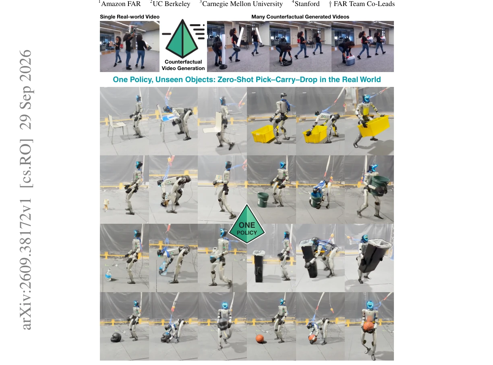
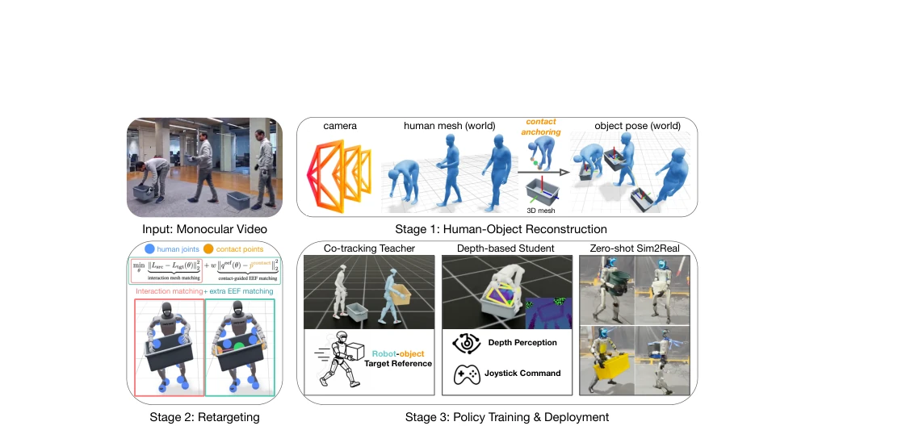
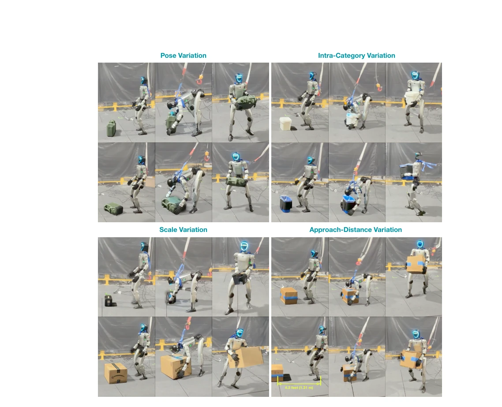
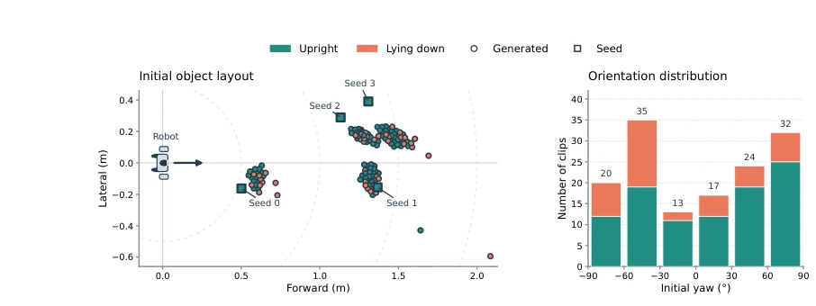
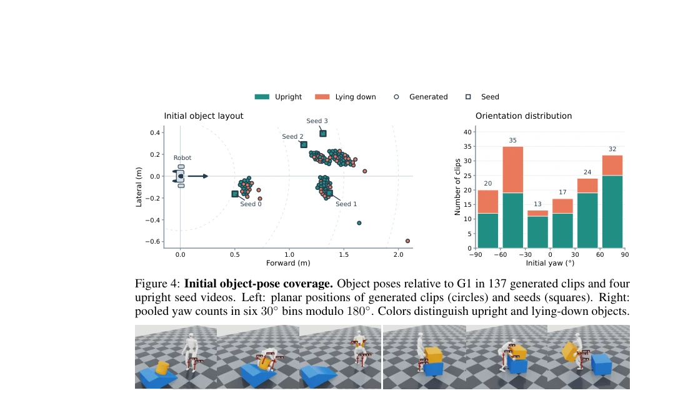
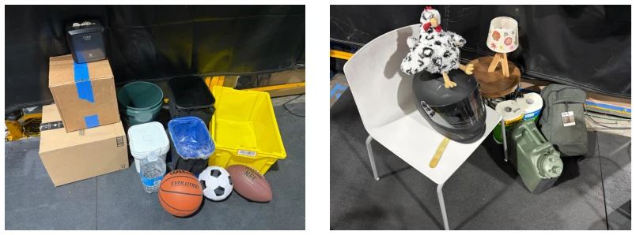

This PRISM paper attempts to generate something from nothing using video generation to solve the data hunger of humanoid robots, the idea is quite bold. The core is to generate counterfactual interactions from a few real videos, then transfer to simulation training. The highlight is zero-shot transfer to real robots, capable of grasping different objects, and even handling unseen categories. But the criticism point is: monocular reconstruction error is large, relying entirely on contact point anchoring to forcibly pull back to physical rationality, this is like using a rubber band to straighten a crooked skeleton, what if it breaks? Moreover, only 4 seed videos were used, the scale effect is questionable, after all, among the generated 256 videos, many failed due to collisions. However, applying V2V to data augmentation is indeed smarter than pure geometric augmentation, at least saving the time of collecting data, letting robots not have to move bricks on the film set.
Humanoid robots learning full-body motion skills via visual imitation learning is a trend, but the bottleneck lies in the difficulty of collecting high-quality interaction videos. Although there are many internet videos, their perspectives, occlusions, and object diversity do not meet training requirements [1]. Existing methods rely on large amounts of real capture data or specific scene videos, with poor scalability, making it difficult to cover complex objects in daily life. PRISM aims to leverage the prior knowledge of video generation models to synthesize diverse data from a few real videos, solving the "data famine". This is more reliable than directly generating robot videos, as it preserves clues of real physical interactions, avoids the execution gap between synthetic videos and physical reality, and frees imitation learning from reliance on expensive motion capture equipment.

Figure 1: PRISM leverages video-to-video (V2V) generation to expand a few real videos into diverse counterfactual interactions—interactions that did not occur in the source videos but could have oc- curred with different objects. Reconstruction and retargeting yield physically plausible robot–object trajectories for training a unified depth-based humanoid policy that picks up, carries, and drops di- verse objects zero-shot in real world deployment. Project website: prism-real2sim2real.github.io.
The overall process is divided into three steps. First is Counterfactual Video Generation, utilizing SeedDance 2.0 to replace object categories based on seed videos (e.g., box to ball), generating counterfactual videos while preserving background lighting. Second is Contact-Anchored Real-to-Sim, the core innovation. It uses CRISP to reconstruct camera, human, and object motion in monocular videos, with the key being the use of "contact points" as constraints: human motion guides object trajectories, while object contact corrects human pose errors, resolving monocular ambiguity. The Retargeting stage also employs contact anchors to map human actions to the robot, correcting reconstruction noise and ensuring physical plausibility. Finally, Policy Learning involves first training a privileged teacher policy (using full state), then distilling it into a depth student policy (using onboard depth + joystick), achieving zero-shot deployment without external mocap. The Teacher reward includes a contact perception term, encouraging the manipulator arm to reach the target contact point and exceed the force threshold for stable grasping.

Figure 2: PRISM Real-to-sim Overview. PRISM turns counterfactual human–object videos into deployable humanoid loco-manipulation skills. It reconstructs the camera, human motion, object geometry, and 6D object motion in a shared world frame, using contact points to constrain object pose optimization under monocular ambiguity. The same anchors are used in retargeting to preserve interaction phases and match robot end-effectors to intended contact points. The retargeted demon- strations train a privileged co-tracking teacher, which is distilled into a depth-based student policy conditioned on onboard depth and joystick commands for zero-shot sim-to-real deployment.
Tests were conducted on the Unitree G1 without fine-tuning. In-domain object success rates reached up to 100% (box), while Out-of-domain objects such as helmets and backpacks also demonstrated good performance. Compared to models trained on OMOMO data, PRISM exhibits better generalization and can handle unseen depth observations. Ablation studies indicate that contact-anchored reconstruction and contact rewards significantly improve success rates (ID from 22.5% to 96.25%). However, limitations of monocular reconstruction were exposed, with some generated videos failing due to collisions. Physics simulation employs rigid bodies, offering limited support for deformable objects, and relies on Fast-FoundationStereo to minimize depth gaps.

Figure 3: Policy rollout under real-world object variations. Our single unified policy zero-shot transfers to the real robot across object-pose, intra-category, scale, and approach-distance variations. The policy is agnostic to object placement and initial pose (top-left), handles objects with different topology and appearance within the same category (top-right), and generalizes to large scale varia- tions (bottom-left). It further adapts to object distance using onboard depth, either approaching (up to 4.3 feet!) before grasping or directly grasping when the object is within reach (bottom-right).
其他图片Other Figures

Figure 4: Initial object-pose coverage. Object poses relative to G1 in 137 generated clips and four upright seed videos. Left: planar positions of generated clips (circles) and seeds (squares). Right: pooled yaw counts in six 30◦bins modulo 180◦. Colors distinguish upright and lying-down objects.

Figure 5: Zero-shot elevated pick-up. Though trained only on flat terrain, our policy picks up a box on a 35◦ramp (left) and from a 0.43 m elevated support (right), without additional policy tuning.

Figure 7: Real-world test objects. In-domain objects are unseen instances of boxes, bins, barrels, and balls. Out-of-domain objects belong to categories absent from the generated training videos. Both groups vary in appearance, geometry, weight, and scale.